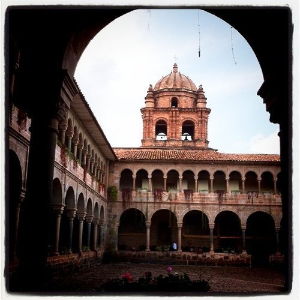

Thu, 04 Nov 2010 22:34:00 · Peru · Cusco · Inca · Travel
Qoricancha (Santo Domingo) ~ Cusco, Peru

• The inner courtyard of Qoricancha •
The Coricancha (from the Quechua words Quri Kancha meaning ‘Golden Courtyard’), originally named Inti Kancha (’ Temple of the Sun’) was the most important temple in the Inca Empire, dedicated primarily to Inti, the Sun God. It was one of the most revered temples of the capital city of Cusco.
The walls and floors were once covered in sheets of solid gold, and the courtyard was filled with golden statues. Spanish reports tell of its opulence that was “fabulous beyond belief”. When the Spanish required the Inca to raise a ransom in gold for the life of the leader Atahualpa, most of the gold was collected from Coricancha.
The Spanish colonists built the Cathedral of Santo Domingo on the site, demolishing the temple and using its foundations for the cathedral. Construction took most of a century. This is one of numerous sites where the Spanish incorporated Inca stonework into the structure of a colonial building. Major earthquakes have severely damaged the church, but the Inca stone walls, built out of huge, tightly-interlocking blocks of stone, still stand due to their sophisticated stone masonry. Nearby is an underground archaeological museum, which contains numerous interesting pieces, including mummies, textiles and sacred idols from the site.
~ More pix will be posted later…